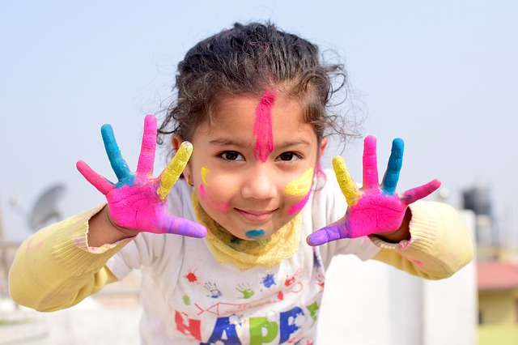

HOLI
{kind=link}
Holi comes around spring time in India, flowers and fields are in bloom and the country goes wild with people running on the streets and smearing each other with brightly hued powders and coloured water. This is the festival of Holi, celebrated on the day after the full moon in early March every year.
Holi is now a symbolic commemmoration of a legend from Hindu Mythology. The story centres around an arrogant king who resents his son worshipping Lord Vishnu. He attempts to kill his son but fails each time. Finally, the king's sister Holika who is said to be immune to burning, sits with the boy in a huge fire. However, the prince (Prahlad) emerges unscathed, while his aunt burns to death. Holi commemorates this event from mythology, and huge bonfires are burnt on the eve of Holi as its symbolic representation.
Originally being a festival to celebrate good harvests and fertility of landspring it also becomes the harvest festival. The winter crop of Rabi gets ripe and the corns of wheat become golden. So Holi means to the farmers joyful celebration of new harvest and bubbling with joy and excitement at the prospect of prosperity they offer their first crop to Agnidev. Only after this offering of first harvest to Agnidev, the farmers use the crop for their personal consumption.
The Sikh community also celebrates Holi with feasting and merriment and call it Hola Mohalla.
This exuberant festival is also associated with the immortal love of Krishna and Radha, and hence, Holi is spread over 16 days in Vrindavan as well as Mathura - the two cities with which Lord Krishna shared a deep affiliation.
Apart from the usual fun with coloured powder and water, Holi is marked by vibrant processions which are accompanied by folk songs, dances and a general sense of abandoned vitality.Thus Holy is certainly a vital part of our Indian life and culture in which religion still is a living force. Holi is an ancient festival of India and was originally known as 'Holika'. The festivals finds a detailed description in early religious works such as Jaimini's Purvamimamsa-Sutras and Kathaka-Grhya-Sutras. Historians also believe that Holi was celebrated by all Aryans but more so in the Eastern part of India.
It is said that Holi existed several centuries before Christ. However, the meaning of the festival is believed to have changed over the years. Earlier it was a special rite performed by married women for the happiness and well-being of their families and the full moon (Raka) was worshiped.
Calculating the Day of Holi
There are two ways of reckoning a lunar month- 'purnimanta' and 'amanta'. In the former, the first day starts after the full moon; and in the latter, after the new moon. Though the amanta reckoning is more common now, the purnimanta was very much in vogue in the earlier days.
According to this purnimanta reckoning, Phalguna purnima was the last day of the year and the new year heralding the Vasanta-ritu (with spring starting from next day). Thus the full moon festival of Holika gradually became a festival of merrymaking, announcing the commencement of the spring season. This perhaps explains the other names of this festival - Vasanta-Mahotsava and Kama-Mahotsava. Legends and Mythology
In some parts of India, specially in Bengal and Orissa, Holi Purnima is also celebrated as the birthday of Shri Chaitanya Mahaprabhu (A.D. 1486-1533). However, the literal meaning of the word 'Holi' is 'burning'. There are various legends to explain the meaning of this word, most prominent of all is the legend associated with demon king Hiranyakashyap.
Hiranyakashyap wanted everybody in his kingdom to worship only him but to his great disappointment, his son, Prahlad became an ardent devotee of Lord Naarayana. Hiaranyakashyap commanded his sister, Holika to enter a blazing fire with Prahlad in her lap. Holika had a boon whereby she could enter fire without any damage on herself. However, she was not aware that the boon worked only when she enters the fire alone. As a result she paid a price for her sinister desires, while Prahlad was saved by the grace of the god for his extreme devotion. The festival, therefore, celebrates the victory of good over evil and also the triumph of devotion.
Legend of Lord Krishna is also associated with play with colors as the Lord started the tradition of play popularity with the people and became a tradition.
There Are also a few other legends associated with the festival - like the legend of Shiva and Kaamadeva and those of Ogress Dhundhi and Pootana. All depict triumph of good over evil - lending a philosophy to the festivalIn spite of being such a colourful and gay festival, there are various aspects of Holi which makes it so significant for our lives. Though they might not be so apparent but a closer look and a little thought will reveal the significance of Holi in more ways than meets the eyes. Ranging from socio-cultural, religious to biological there is every reason why we must heartily enjoy the festival and cherish the reasons for its celebrations. So when, its time for Holi, please don't hold yourself back and enjoy the festival to the hilt by participating with full enthusiasm in every small tradition related to the festival.
HOLI SONGS
Holi Hai Dil ne ek baar aur humaara kehna maana hai, Is holi pe phir useh rangne jaana hai. Har saal khareeden hain rang, kari hai tayaari, Is baar to khelenaa humaare saath, dekhnaa raah humaari. Shahar mein sabse pooch rahe hain , rang-e-mohabbat kahaan milega Raat ko khuda ne bataaya ki abhi aur imtehaanon se guzarnaa parega Neela, hara , peela , gulaabi yeh sab to ek bahaana hai, Holi ka ho din ya kuch aur hume to tumse milne aana hai Is Holi pe useh rangne jaana hai, Is Holi pe useh rangne jaana hai
Holi Mela
Holi Mela infuse vibrancy and enthusiasm amongst people in India and abroad. Large number of tourists are attracted towards these grand affair of Holi celebration. Holi fairs are more popular in villages than they are in cities. People from far off villages specially move down to the village holding the Holi Fair a week before the festival. Holi Mela serves as a full entertainment package for young children and elders. One can visualize the craze and love to celebrate the colorful festival with these Holi fairs.